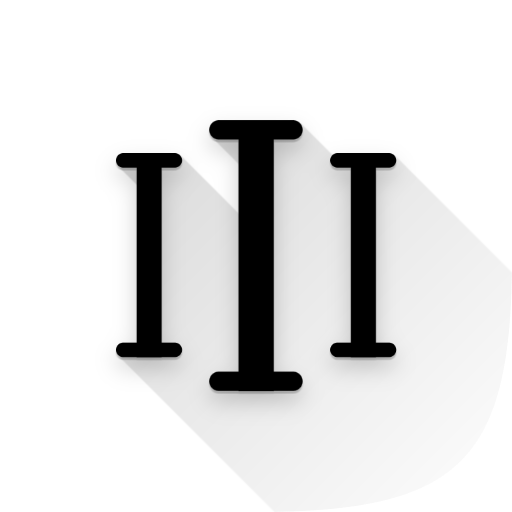

La forma más sencilla de contar todo.
CountAll es la herramienta perfecta para llevar un registro de cualquier cosa que necesites. Simple, intuitiva y siempre a mano.
También disponible en tu navegador (Android, iPhone y ordenador):
Usar la versión web